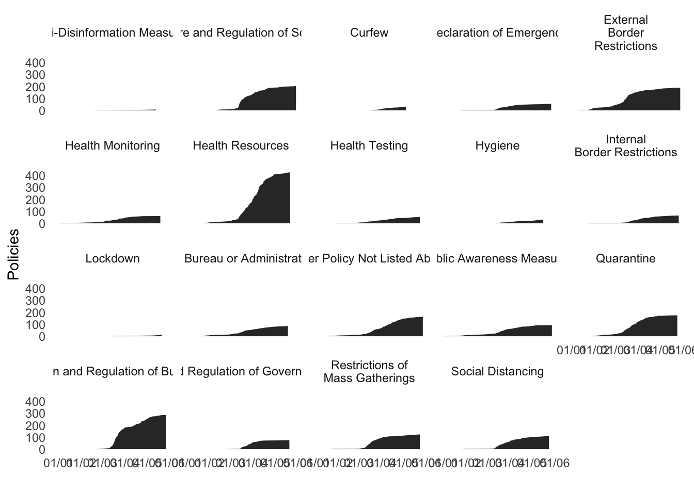

Download the script here
rm(list=ls())
library(readr)
library(tidyverse)# https://r4ds.had.co.nz/transform.html
#https://garthtarr.github.io/meatR/dplyr.html
# the dplyr counterpart to the str() function is the 'glimpse' function
glimpse(coronaNet)## Rows: 2,249
## Columns: 38
## $ record_id <chr> "1000775Ds", "1000775Dm", "1003875NA", "1004103NA"…
## $ policy_id <dbl> 1342691, 1342691, 1003875, 1004103, 2575122, 10052…
## $ recorded_date <dttm> 2020-04-04 15:43:15, 2020-04-04 15:43:15, 2020-04…
## $ date_updated <date> 2020-04-04, 2020-04-04, 2020-04-15, 2020-05-15, 2…
## $ date_announced <date> 2020-03-14, 2020-03-14, 2020-04-07, 2020-05-15, 2…
## $ date_start <date> 2020-03-14, 2020-03-14, 2020-04-07, 2020-05-15, 2…
## $ date_end <date> NA, NA, NA, NA, NA, NA, NA, NA, NA, NA, NA, 2020-…
## $ entry_type <chr> "update", "update", "new_entry", "new_entry", "upd…
## $ update_type <chr> NA, NA, NA, NA, NA, NA, NA, NA, NA, NA, NA, NA, NA…
## $ event_description <chr> "Chile extends mandatory quarantine for people fro…
## $ domestic_policy <dbl> 0, 0, 1, 1, 0, 1, 1, 1, 1, 1, 1, 1, 1, 1, 1, 1, 1,…
## $ type <chr> "Quarantine", "Quarantine", "Other Policy Not List…
## $ type_sub_cat <chr> "Self-Quarantine (i.e. quarantine at home)", "Quar…
## $ type_text <dbl> NA, NA, NA, NA, NA, NA, NA, NA, NA, NA, NA, NA, NA…
## $ index_high_est <dbl> 52.03633, 52.03633, 56.17884, NA, 54.14313, 55.981…
## $ index_med_est <dbl> 51.22552, 51.22552, 54.83055, NA, 53.08173, 54.901…
## $ index_low_est <dbl> 50.20661, 50.20661, 53.59422, NA, 52.28079, 53.777…
## $ index_country_rank <dbl> 113, 113, 181, NA, 144, 182, 168, NA, NA, NA, 130,…
## $ correct_type <chr> "original", "original", "original", "original", "o…
## $ country <chr> "Chile", "Chile", "Guatemala", "Turkey", "Kenya", …
## $ init_country_level <chr> "National", "National", "National", "National", "N…
## $ province <chr> NA, NA, NA, NA, NA, "Bern", NA, NA, NA, NA, "Sardi…
## $ city <chr> NA, NA, NA, NA, NA, NA, NA, NA, NA, NA, NA, NA, NA…
## $ source_corr_type <lgl> NA, NA, NA, NA, NA, NA, NA, NA, NA, NA, NA, NA, NA…
## $ target_country <chr> "China,France,Germany,Iran,Italy,Japan,North Korea…
## $ target_geog_level <chr> "One or more countries, but not all countries", "O…
## $ target_region <chr> NA, NA, NA, NA, NA, NA, NA, NA, NA, NA, NA, NA, NA…
## $ target_province <chr> NA, NA, NA, NA, NA, "Bern", NA, NA, NA, NA, "Sardi…
## $ target_city <chr> NA, NA, NA, NA, NA, NA, NA, NA, NA, NA, NA, NA, NA…
## $ target_other <lgl> NA, NA, NA, NA, NA, NA, NA, NA, NA, NA, NA, NA, NA…
## $ target_who_what <chr> "All Travelers (Citizen Travelers + Foreign Travel…
## $ target_direction <chr> "Inbound", "Inbound", NA, NA, "Inbound", NA, NA, N…
## $ travel_mechanism <chr> "All kinds of transport", "All kinds of transport"…
## $ compliance <chr> "Mandatory with Fines", "Mandatory with Fines", "M…
## $ enforcer <chr> "National Government,Ministry/Department of Health…
## $ link <chr> "https://www.gob.cl/noticias/covid-19-ministerio-d…
## $ ISO_A3 <chr> "CHL", "CHL", "GTM", "TUR", "KEN", "CHE", "ITA", "…
## $ ISO_A2 <chr> "CL", "CL", "GT", "TR", "KE", "CH", "IT", "VN", "V…# dplyr counterpart to the 'which' function is the 'filter' function
filter(coronaNet, type == "Closure and Regulation of Schools")## # A tibble: 205 x 38
## record_id policy_id recorded_date date_updated date_announced
## <chr> <dbl> <dttm> <date> <date>
## 1 1005610Dc 1005610 2020-05-29 07:51:28 2020-05-29 2020-05-07
## 2 1005610Dd 1005610 2020-05-29 07:51:28 2020-05-29 2020-05-07
## 3 1005610Dr 1005610 2020-05-29 07:51:28 2020-05-29 2020-05-07
## 4 1033361Dd 1033361 2020-04-29 03:46:29 2020-04-29 2020-04-17
## 5 1033361Dr 1033361 2020-04-29 03:46:29 2020-04-29 2020-04-17
## 6 1043355Dc 1043355 2020-04-03 09:44:07 2020-04-03 2020-03-20
## 7 1043355Dd 1043355 2020-04-03 09:44:07 2020-04-03 2020-03-20
## 8 1043355Dr 1043355 2020-04-03 09:44:07 2020-04-03 2020-03-20
## 9 1047400Dc 1047400 2020-04-03 00:29:03 2020-04-03 2020-03-18
## 10 1047400Dd 1047400 2020-04-03 00:29:03 2020-04-03 2020-03-18
## # … with 195 more rows, and 33 more variables: date_start <date>,
## # date_end <date>, entry_type <chr>, update_type <chr>,
## # event_description <chr>, domestic_policy <dbl>, type <chr>,
## # type_sub_cat <chr>, type_text <dbl>, index_high_est <dbl>,
## # index_med_est <dbl>, index_low_est <dbl>, index_country_rank <dbl>,
## # correct_type <chr>, country <chr>, init_country_level <chr>,
## # province <chr>, city <chr>, source_corr_type <lgl>, target_country <chr>,
## # target_geog_level <chr>, target_region <chr>, target_province <chr>,
## # target_city <chr>, target_other <lgl>, target_who_what <chr>,
## # target_direction <chr>, travel_mechanism <chr>, compliance <chr>,
## # enforcer <chr>, link <chr>, ISO_A3 <chr>, ISO_A2 <chr># Class question: what if you want to find all observations that fits the condition above but only if the initiating country (country) is Germany?
# Class question: what if you want to find all observations that fits the condition above AND the type of policy (type) is 'External Border Restrictions'?
# Class question: what if you want to find all observations that fits the condition above that are not NA for the end of policy field (date_end)
# the dplyr counterpart to the '[ ]' command to subset by rows is the slice function
slice(coronaNet, 1:10)## # A tibble: 10 x 38
## record_id policy_id recorded_date date_updated date_announced
## <chr> <dbl> <dttm> <date> <date>
## 1 1000775Ds 1342691 2020-04-04 15:43:15 2020-04-04 2020-03-14
## 2 1000775Dm 1342691 2020-04-04 15:43:15 2020-04-04 2020-03-14
## 3 1003875NA 1003875 2020-04-15 11:04:50 2020-04-15 2020-04-07
## 4 1004103NA 1004103 2020-05-15 11:04:46 2020-05-15 2020-05-15
## 5 1004681NA 2575122 2020-04-03 08:33:25 2020-04-03 2020-03-22
## 6 100526NA 100526 2020-04-11 03:45:41 2020-04-11 2020-04-02
## 7 4866080NA 1005278 2020-03-30 05:21:44 2020-03-30 2020-03-20
## 8 1005610Dc 1005610 2020-05-29 07:51:28 2020-05-29 2020-05-07
## 9 1005610Dd 1005610 2020-05-29 07:51:28 2020-05-29 2020-05-07
## 10 1005610Dr 1005610 2020-05-29 07:51:28 2020-05-29 2020-05-07
## # … with 33 more variables: date_start <date>, date_end <date>,
## # entry_type <chr>, update_type <chr>, event_description <chr>,
## # domestic_policy <dbl>, type <chr>, type_sub_cat <chr>, type_text <dbl>,
## # index_high_est <dbl>, index_med_est <dbl>, index_low_est <dbl>,
## # index_country_rank <dbl>, correct_type <chr>, country <chr>,
## # init_country_level <chr>, province <chr>, city <chr>,
## # source_corr_type <lgl>, target_country <chr>, target_geog_level <chr>,
## # target_region <chr>, target_province <chr>, target_city <chr>,
## # target_other <lgl>, target_who_what <chr>, target_direction <chr>,
## # travel_mechanism <chr>, compliance <chr>, enforcer <chr>, link <chr>,
## # ISO_A3 <chr>, ISO_A2 <chr># the dplyr counterpart to the 'sort' function is the arrange function
arrange(coronaNet, date_start)## # A tibble: 2,249 x 38
## record_id policy_id recorded_date date_updated date_announced
## <chr> <dbl> <dttm> <date> <date>
## 1 1074096NA 1074096 2020-04-14 06:04:49 2020-04-14 2019-12-31
## 2 1747784NA 1747784 2020-04-05 10:20:16 2020-04-05 2020-03-11
## 3 8098722NA 1428806 2020-04-02 11:26:23 2020-04-02 2020-01-02
## 4 1518388Bn 1518388 2020-04-14 06:46:27 2020-04-14 2020-01-09
## 5 1921058NA 1921058 2020-04-02 18:30:56 2020-04-02 2020-01-09
## 6 1989552NA 1989552 2020-03-31 04:56:40 2020-03-31 2020-01-10
## 7 1654091NA 1654091 2020-05-05 09:56:24 2020-05-05 2020-01-13
## 8 1523205NA 1523205 2020-04-02 20:19:50 2020-04-02 2020-01-18
## 9 1990707NA 1990707 2020-04-02 20:45:50 2020-04-02 2020-01-20
## 10 1024919NA 1024919 2020-04-03 11:19:15 2020-04-03 2020-01-21
## # … with 2,239 more rows, and 33 more variables: date_start <date>,
## # date_end <date>, entry_type <chr>, update_type <chr>,
## # event_description <chr>, domestic_policy <dbl>, type <chr>,
## # type_sub_cat <chr>, type_text <dbl>, index_high_est <dbl>,
## # index_med_est <dbl>, index_low_est <dbl>, index_country_rank <dbl>,
## # correct_type <chr>, country <chr>, init_country_level <chr>,
## # province <chr>, city <chr>, source_corr_type <lgl>, target_country <chr>,
## # target_geog_level <chr>, target_region <chr>, target_province <chr>,
## # target_city <chr>, target_other <lgl>, target_who_what <chr>,
## # target_direction <chr>, travel_mechanism <chr>, compliance <chr>,
## # enforcer <chr>, link <chr>, ISO_A3 <chr>, ISO_A2 <chr>arrange(coronaNet, desc(date_start))## # A tibble: 2,249 x 38
## record_id policy_id recorded_date date_updated date_announced
## <chr> <dbl> <dttm> <date> <date>
## 1 1886438NA 6801359 2020-05-17 14:54:56 2020-05-17 2020-05-13
## 2 1010884NA 1010884 2020-04-22 16:50:38 2020-04-22 2020-04-10
## 3 1061496NA 1061496 2020-05-29 04:58:03 2020-05-29 2020-05-11
## 4 1291080Eb 1291080 2020-05-28 08:49:15 2020-05-28 2020-05-22
## 5 1401604Db 1401604 2020-05-09 09:12:24 2020-05-09 2020-04-24
## 6 14907NA 14907 2020-05-22 07:00:55 2020-05-22 2020-05-22
## 7 1556359Dc 1556359 2020-05-30 16:43:31 2020-05-30 2020-05-27
## 8 1556359Dd 1556359 2020-05-30 16:43:31 2020-05-30 2020-05-27
## 9 1556359Dr 1556359 2020-05-30 16:43:31 2020-05-30 2020-05-27
## 10 1691517NA 1691517 2020-05-27 06:12:51 2020-05-27 2020-05-13
## # … with 2,239 more rows, and 33 more variables: date_start <date>,
## # date_end <date>, entry_type <chr>, update_type <chr>,
## # event_description <chr>, domestic_policy <dbl>, type <chr>,
## # type_sub_cat <chr>, type_text <dbl>, index_high_est <dbl>,
## # index_med_est <dbl>, index_low_est <dbl>, index_country_rank <dbl>,
## # correct_type <chr>, country <chr>, init_country_level <chr>,
## # province <chr>, city <chr>, source_corr_type <lgl>, target_country <chr>,
## # target_geog_level <chr>, target_region <chr>, target_province <chr>,
## # target_city <chr>, target_other <lgl>, target_who_what <chr>,
## # target_direction <chr>, travel_mechanism <chr>, compliance <chr>,
## # enforcer <chr>, link <chr>, ISO_A3 <chr>, ISO_A2 <chr># Class question: How could you use arrange() to sort all missing values to the date_end variable? (Hint: use is.na()).
# the dplyr counterpart to the $ operator or the [,variableName] operator is 'select'
select(coronaNet, entry_type)## # A tibble: 2,249 x 1
## entry_type
## <chr>
## 1 update
## 2 update
## 3 new_entry
## 4 new_entry
## 5 update
## 6 new_entry
## 7 new_entry
## 8 new_entry
## 9 new_entry
## 10 new_entry
## # … with 2,239 more rowsselect(coronaNet, entry_type, country)## # A tibble: 2,249 x 2
## entry_type country
## <chr> <chr>
## 1 update Chile
## 2 update Chile
## 3 new_entry Guatemala
## 4 new_entry Turkey
## 5 update Kenya
## 6 new_entry Switzerland
## 7 new_entry Italy
## 8 new_entry Vietnam
## 9 new_entry Vietnam
## 10 new_entry Vietnam
## # … with 2,239 more rowsselect(coronaNet, entry_type:country)## # A tibble: 2,249 x 13
## entry_type update_type event_descripti… domestic_policy type type_sub_cat
## <chr> <chr> <chr> <dbl> <chr> <chr>
## 1 update <NA> "Chile extends … 0 Quar… Self-Quaran…
## 2 update <NA> "Chile extends … 0 Quar… Quarantine …
## 3 new_entry <NA> "On April 7th, … 1 Othe… <NA>
## 4 new_entry <NA> "The total numb… 1 Othe… <NA>
## 5 update <NA> "On 22nd March,… 0 Exte… <NA>
## 6 new_entry <NA> "On April 2nd, … 1 Heal… <NA>
## 7 new_entry <NA> "Italy is enfor… 1 Soci… <NA>
## 8 new_entry <NA> "Schools have r… 1 Clos… Preschool o…
## 9 new_entry <NA> "Schools have r… 1 Clos… Primary Sch…
## 10 new_entry <NA> "Schools have r… 1 Clos… Secondary S…
## # … with 2,239 more rows, and 7 more variables: type_text <dbl>,
## # index_high_est <dbl>, index_med_est <dbl>, index_low_est <dbl>,
## # index_country_rank <dbl>, correct_type <chr>, country <chr>select(coronaNet, -c(entry_type:country))## # A tibble: 2,249 x 25
## record_id policy_id recorded_date date_updated date_announced
## <chr> <dbl> <dttm> <date> <date>
## 1 1000775Ds 1342691 2020-04-04 15:43:15 2020-04-04 2020-03-14
## 2 1000775Dm 1342691 2020-04-04 15:43:15 2020-04-04 2020-03-14
## 3 1003875NA 1003875 2020-04-15 11:04:50 2020-04-15 2020-04-07
## 4 1004103NA 1004103 2020-05-15 11:04:46 2020-05-15 2020-05-15
## 5 1004681NA 2575122 2020-04-03 08:33:25 2020-04-03 2020-03-22
## 6 100526NA 100526 2020-04-11 03:45:41 2020-04-11 2020-04-02
## 7 4866080NA 1005278 2020-03-30 05:21:44 2020-03-30 2020-03-20
## 8 1005610Dc 1005610 2020-05-29 07:51:28 2020-05-29 2020-05-07
## 9 1005610Dd 1005610 2020-05-29 07:51:28 2020-05-29 2020-05-07
## 10 1005610Dr 1005610 2020-05-29 07:51:28 2020-05-29 2020-05-07
## # … with 2,239 more rows, and 20 more variables: date_start <date>,
## # date_end <date>, init_country_level <chr>, province <chr>, city <chr>,
## # source_corr_type <lgl>, target_country <chr>, target_geog_level <chr>,
## # target_region <chr>, target_province <chr>, target_city <chr>,
## # target_other <lgl>, target_who_what <chr>, target_direction <chr>,
## # travel_mechanism <chr>, compliance <chr>, enforcer <chr>, link <chr>,
## # ISO_A3 <chr>, ISO_A2 <chr>select(coronaNet, contains('type'))## # A tibble: 2,249 x 7
## entry_type update_type type type_sub_cat type_text correct_type
## <chr> <chr> <chr> <chr> <dbl> <chr>
## 1 update <NA> Quar… Self-Quaran… NA original
## 2 update <NA> Quar… Quarantine … NA original
## 3 new_entry <NA> Othe… <NA> NA original
## 4 new_entry <NA> Othe… <NA> NA original
## 5 update <NA> Exte… <NA> NA original
## 6 new_entry <NA> Heal… <NA> NA original
## 7 new_entry <NA> Soci… <NA> NA correction
## 8 new_entry <NA> Clos… Preschool o… NA original
## 9 new_entry <NA> Clos… Primary Sch… NA original
## 10 new_entry <NA> Clos… Secondary S… NA original
## # … with 2,239 more rows, and 1 more variable: source_corr_type <lgl># Class question: what are some ways you can select record_id, policy_id, target_direction, ISO_A3, and ISO_A2?
# the dplyr counterpart to making a new variable is the 'mutate' function
mutate(coronaNet, newVar1 = 1,
newVar2 = ifelse(entry_type == 'new_entry', 1, 0)) %>%
select(newVar1, newVar2)## # A tibble: 2,249 x 2
## newVar1 newVar2
## <dbl> <dbl>
## 1 1 0
## 2 1 0
## 3 1 1
## 4 1 1
## 5 1 0
## 6 1 1
## 7 1 1
## 8 1 1
## 9 1 1
## 10 1 1
## # … with 2,239 more rows# if you only want to keep the new variables, use transmute()
transmute(coronaNet, newVar1 = 1,
newVar2 = ifelse(entry_type == 'new_entry', 1, 0)) ## # A tibble: 2,249 x 2
## newVar1 newVar2
## <dbl> <dbl>
## 1 1 0
## 2 1 0
## 3 1 1
## 4 1 1
## 5 1 0
## 6 1 1
## 7 1 1
## 8 1 1
## 9 1 1
## 10 1 1
## # … with 2,239 more rowscoronaNet %>% group_by(country) %>%
summarise(count = n(),
numberOfTypesOfPolicies = n_distinct(type),
mostActive = median(date_start))## # A tibble: 190 x 4
## country count numberOfTypesOfPolicies mostActive
## <chr> <int> <int> <date>
## 1 Afghanistan 10 4 2020-03-28
## 2 Albania 1 1 2020-03-14
## 3 Algeria 2 1 2020-03-15
## 4 Andorra 4 2 2020-03-16
## 5 Angola 19 7 2020-04-02
## 6 Antigua and Barbuda 6 5 2020-03-28
## 7 Argentina 9 7 2020-03-25
## 8 Armenia 14 5 2020-04-08
## 9 Australia 22 11 2020-03-24
## 10 Austria 15 7 2020-03-19
## # … with 180 more rowscoronaNet %>% group_by(country) %>%
mutate(correct_type = ifelse(correct_type == 'original', 0, 1)) %>%
summarise(count = n(),
numberOfTypesOfPolicies = n_distinct(type),
mostActive = median(date_start),
percCorrected = mean(correct_type))## # A tibble: 190 x 5
## country count numberOfTypesOfPolicies mostActive percCorrected
## <chr> <int> <int> <date> <dbl>
## 1 Afghanistan 10 4 2020-03-28 0
## 2 Albania 1 1 2020-03-14 0
## 3 Algeria 2 1 2020-03-15 0
## 4 Andorra 4 2 2020-03-16 0
## 5 Angola 19 7 2020-04-02 0
## 6 Antigua and Barbuda 6 5 2020-03-28 0
## 7 Argentina 9 7 2020-03-25 0
## 8 Armenia 14 5 2020-04-08 0
## 9 Australia 22 11 2020-03-24 0
## 10 Austria 15 7 2020-03-19 0
## # … with 180 more rowscoronaNet %>% group_by(country, date_start) %>%
summarise(count = n(),
numberOfTypesOfPolicies = n_distinct(type))## # A tibble: 1,281 x 4
## # Groups: country [190]
## country date_start count numberOfTypesOfPolicies
## <chr> <date> <int> <int>
## 1 Afghanistan 2020-02-12 1 1
## 2 Afghanistan 2020-02-27 1 1
## 3 Afghanistan 2020-03-22 2 2
## 4 Afghanistan 2020-03-24 1 1
## 5 Afghanistan 2020-04-01 1 1
## 6 Afghanistan 2020-04-15 3 1
## 7 Afghanistan 2020-04-29 1 1
## 8 Albania 2020-03-14 1 1
## 9 Algeria 2020-03-13 1 1
## 10 Algeria 2020-03-18 1 1
## # … with 1,271 more rows#install.packages("kableExtra")
library(kableExtra)
coronaNet %>%
filter(init_country_level == "Yes, it is at the province/state level",
#entry_type=="new_entry",
country=="Germany") %>%
group_by(type) %>%
summarize(`Total Number of Policies`=n(),
`Number of Countries`=length(unique(country)),
`Number of Targeted Countries`=length(unique(target_country)),
`% With Mandatory Enforcement`=round(mean(grepl(x=compliance,pattern="Mandatory")*100,na.rm=T),0)) %>%
dplyr::select(Type="type",everything()) %>%
filter(!is.na(Type)) %>%
arrange(desc(`Total Number of Policies`)) %>%
ungroup() %>%
knitr::kable("html",booktabs=T,
caption="Policies by Germany on state level (Bundesländer)") | Type | Total Number of Policies | Number of Countries | Number of Targeted Countries | % With Mandatory Enforcement |
|---|---|---|---|---|
| Restriction and Regulation of Businesses | 22 | 1 | 1 | 100 |
| Closure and Regulation of Schools | 19 | 1 | 1 | 100 |
| Health Resources | 14 | 1 | 1 | 0 |
| Restrictions of Mass Gatherings | 6 | 1 | 1 | 100 |
| Social Distancing | 5 | 1 | 1 | 100 |
| Health Testing | 2 | 1 | 1 | 50 |
| New Task Force, Bureau or Administrative Configuration | 2 | 1 | 1 | 100 |
| Quarantine | 2 | 1 | 1 | 100 |
| External Border Restrictions | 1 | 1 | 1 | 100 |
| Internal Border Restrictions | 1 | 1 | 1 | 100 |
| Other Policy Not Listed Above | 1 | 1 | 1 | 0 |
| Public Awareness Measures | 1 | 1 | 1 | 100 |
| Restriction and Regulation of Government Services | 1 | 1 | 1 | 100 |
In this case, we want to have the density plot for the frequencies of policies.
#install.packages("lubridate")
library(lubridate)
d<- coronaNet%>%
filter(!is.na(type)) %>%
group_by(type,date_announced) %>%
summarize(Policies=length(unique(record_id))) %>%
arrange(type,date_announced) %>%
mutate(Policies=cumsum(Policies)) %>%
ungroup %>%
mutate( type=recode(type,
`External Border Restrictions`="External\nBorder\nRestrictions",
`Restriction of Non-Essential Businesses`="Restriction of\nNon-Essential\nBusinesses",
`Restrictions of Mass Gatherings`="Restrictions of\nMass Gatherings",
`Restriction of Non-Essential Government Services`="Restriction of\nNon-Essential\nGovernment Services",
`Internal Border Restrictions`="Internal\nBorder Restrictions",
`External Border Restrictions`="External\nBorder Restrictions",
`Public Awareness Campaigns`="Public\nAwareness Campaigns",
`New Task Force or Bureau`="New Task Force")) %>%
ggplot(aes(y=Policies,x=date_announced)) +
geom_area() +
theme_minimal() +
theme(panel.grid = element_blank(),
strip.background = element_blank()) +
xlab("") +
facet_wrap(~type)
d_all<-d + scale_x_date(date_labels = "%d/%m")
d_all
# https://www.dummies.com/education/science/biology/how-to-use-student-t-tests-to-compare-averages/
# Doing a t-test in R
# https://uc-r.github.io/t_test
# Doing a t-test by hand
# http://onlinestatbook.com/2/tests_of_means/difference_means.html
# https://stattrek.com/hypothesis-test/difference-in-means.aspx
# Interpreting p-values
# https://blog.minitab.com/blog/adventures-in-statistics-2/how-to-correctly-interpret-p-values
# class question: what is the average gdpPPP
# lets see if there is a statistical difference in the number of business restrictions for countries over the average GDP PPP level
# compared to countries under the average GDP PPP level
t.test(dataAgg %>% filter(gdpPPP > mean(dataAgg$gdpPPP, na.rm = TRUE)) %>% select(numBusinessRestrictions),
dataAgg %>% filter(gdpPPP <= mean(dataAgg$gdpPPP, na.rm = TRUE))%>% select(numBusinessRestrictions))##
## Welch Two Sample t-test
##
## data: dataAgg %>% filter(gdpPPP > mean(dataAgg$gdpPPP, na.rm = TRUE)) %>% and dataAgg %>% filter(gdpPPP <= mean(dataAgg$gdpPPP, na.rm = TRUE)) %>% select(numBusinessRestrictions) and select(numBusinessRestrictions)
## t = 1.5584, df = 18.136, p-value = 0.1364
## alternative hypothesis: true difference in means is not equal to 0
## 95 percent confidence interval:
## -2.54962 17.22874
## sample estimates:
## mean of x mean of y
## 10.210526 2.870968dataAgg %>% filter(gdpPPP > mean(dataAgg$gdpPPP, na.rm = TRUE)) %>% summarise(avgNumBusinessRestrictions = mean(numBusinessRestrictions, na.rm = TRUE)) ## # A tibble: 1 x 1
## avgNumBusinessRestrictions
## <dbl>
## 1 10.2dataAgg %>% filter(gdpPPP <= mean(dataAgg$gdpPPP, na.rm = TRUE)) %>% summarise(avgNumBusinessRestrictions = mean(numBusinessRestrictions, na.rm = TRUE)) ## # A tibble: 1 x 1
## avgNumBusinessRestrictions
## <dbl>
## 1 2.87